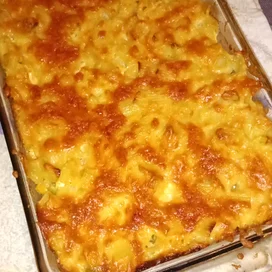

Macaroni Pie

Description
This wonderful pie is a variation of macaroni and cheese.
Ingredients
- 32 ounces elbow macaroni
- 3 eggs
- 3 cups milk
- 4 cups shredded Cheddar cheese
- ¼ teaspoon salt
Steps
- Preheat oven to 350 degrees F (175 degrees C).
- Bring a large pot of lightly salted water to a boil. Add macaroni and cook for 8 to 10 minutes or until al dente; drain.
- Beat eggs and milk together. Pour half of the cooked macaroni into 9x13 inch baking dish. Cover macaroni with half of the cheese. Pour remaining macaroni into baking dish leaving a little room at the top. Cover with remaining cheese. Pour egg mixture over macaroni. Sprinkle with salt.
- Bake in a preheated over for an hour or until a knife inserted comes out clean.